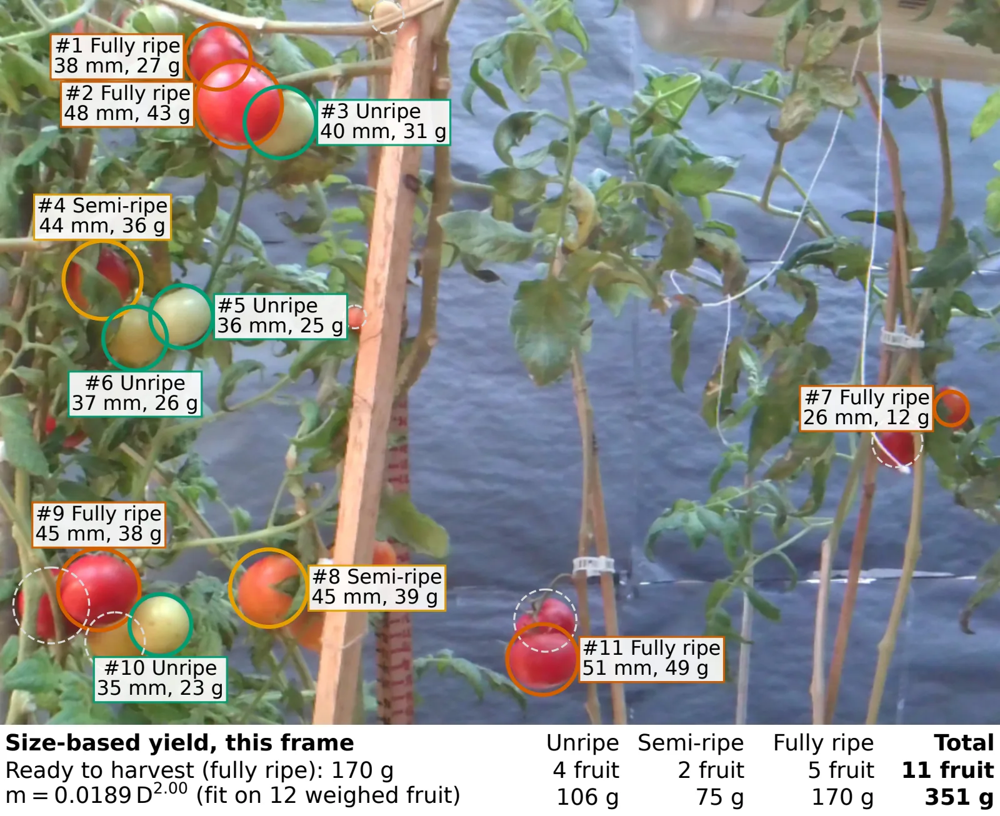
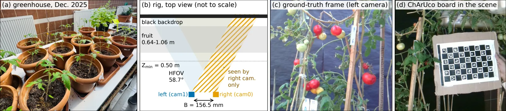
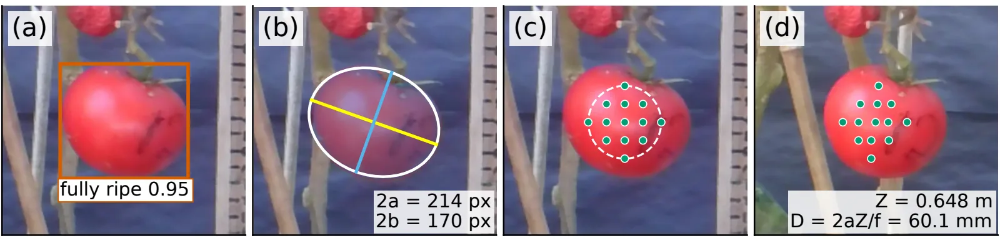
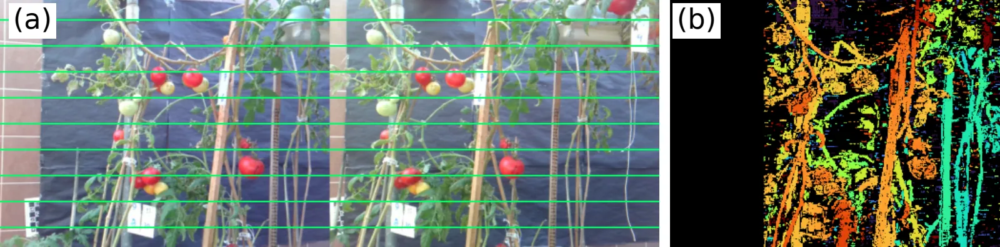
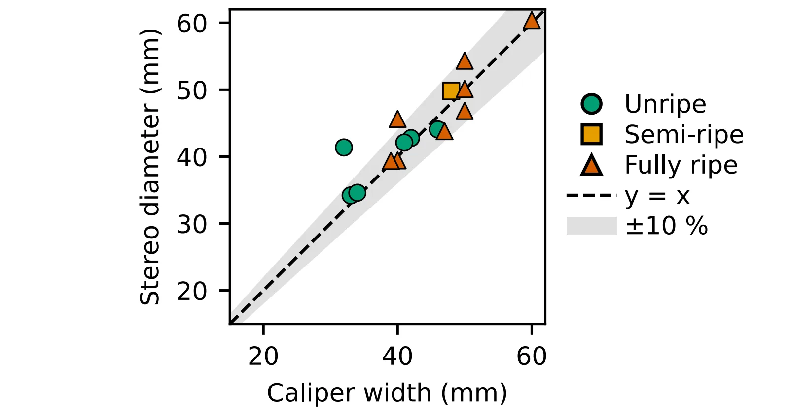
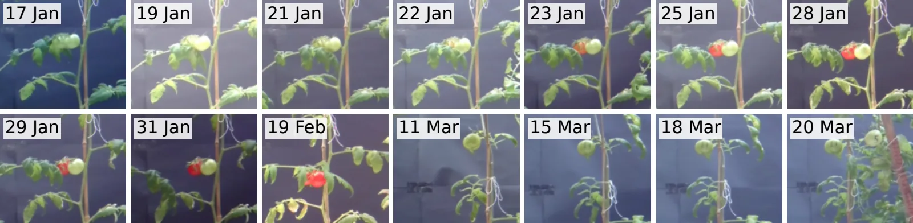

Non-destructive tomato sizing with stereo vision
Two low-cost USB cameras find each tomato on the plant, judge its ripeness, measure its diameter to within about 2 mm and turn that into a yield estimate, without touching the fruit. Part of my MS thesis.

What this project is
This is part of my MS thesis at Gebze Technical University, within the TÜBİTAK 1071 / ARDEB 124N905 bilateral R&D project between Türkiye and Pakistan (GTU, NUST, Cx Technology and FFC-FACE). I own the machine learning workstream, and measuring fruit on the plant is one of its core tasks.
Two low-cost USB cameras look at the tomato plants. The pipeline finds each fruit and its ripeness, measures its diameter from stereo, turns diameter into mass, and adds the masses up into a yield estimate. Every stage was checked against physical measurements in the greenhouse: a caliper, a laboratory scale and a calibration board.
What needed solving
Growers and harvesting robots need the size and mass of each tomato while it is still on the plant, to estimate yield without picking and to decide which fruit to pick. Most image-based systems only count fruit, and a count alone does not give mass. Measuring on the plant is hard: green fruit sit against green leaves, and fruit and leaves hide each other.
Depth sensors and multi-camera rigs can measure size, but they are expensive or struggle in a greenhouse. The question here was whether two ordinary passive cameras could measure size accurately enough to make yield estimates clearly better than counting.
What I did
- Own the machine learning workstream within the 24-month bilateral project.
- Built the full pipeline, from stereo capture and calibration to ripeness detection, sizing, mass and yield.
- Trained the YOLOv10s ripeness detector on the tomatOD and Laboro Tomato datasets merged.
- Ran the ground-truth session in the greenhouse: 24 tagged fruit, caliper and scale measurements, and a board check of the stereo scale.
- Collected a stereo time-lapse of the plants from January to March 2026, which we plan to publish as a dataset.
- Wrote the conference paper and presented the work at GTU seminars and project workshops.
I work under Prof. Dr. Yusuf Sinan Akgül, with plant scientists from GTU Molecular Biology and Genetics who host the greenhouse and grow the plants, and with the NUST team in Pakistan.
How it works
The key idea is that depth is only needed on the fruit. A full depth map of a greenhouse is mostly leaves, stems and background, and every false match there can spoil a fruit's size. So the pipeline finds each fruit first, cuts it out, and measures depth only at points inside it.

Calibrate and rectify
A ChArUco board (6 × 9 squares of 28 mm) calibrates the camera pair in OpenCV. After rectification, a point on a fruit lies on the same image row in both cameras, so matching becomes a search along one row.
Detect ripeness
YOLOv10s finds each fruit and labels it unripe, semi-ripe or fully ripe. It runs at a low confidence threshold, because a fruit that is missed can never be measured.
Cut out the fruit
Colour thresholds fail on green fruit against leaves, so GrabCut segments each fruit starting from the detection box alone. An ellipse fitted to the outline gives the fruit's radius in pixels.
Measure depth on the fruit
Points on a 5 × 5 grid inside the fruit are matched along the row in the other image, and the median of their depths is the fruit's distance. The search is limited to 0.5 – 1.5 m, which rules out matches no fruit could have.
Diameter, mass and yield
Diameter = 2 × radius × depth ÷ focal length. A power law fitted on weighed fruit turns diameter into mass, and the masses of all detected fruit add up to the yield.
Flag, never hide
Fruit outside the view both cameras share, clipped at the frame edge, or with a failed mask or depth are flagged, so unreliable sizes are never mixed in silently.


Tools and methods
What came out of it
All results come from one session in the greenhouse on 21 October 2026, with 24 tagged fruit measured on the plant and then by hand.
| Stage | Checked against | Result |
|---|---|---|
| Ripeness | Held-out tomatOD test images | mAP@50 0.780 (0.852 on validation) |
| Stereo scale | Taped distances to a board, 0.6 – 1.2 m | Mean error 1.2%, all within 2% |
| Diameter | Caliper width, 15 fruit | Mean error 2.3 mm (5.7%), 13 of 15 within ±10% |
| Repeatability | Three pairs of the same fruit | Median spread 0.49 mm |
| Mass per fruit | Laboratory scale, leave-one-out | 9.1% error from size, vs 24.5% from counting |
| Total mass | 8 fruit both sized and weighed | 345 g estimated vs 347 g weighed |

Measuring size is what makes the mass estimate useful: knowing each fruit's diameter cut the per-fruit mass error by about 63% compared with counting fruit and multiplying by an average mass.
A time-lapse dataset
Before the measurement session, the same two cameras recorded the plants every 15 to 30 minutes from 2 January to 26 March 2026: about 10,000 images, or 5,000 stereo pairs, over 66 days. We plan to publish it in a data journal.

Limits, stated plainly:
- Fruit outside the view both cameras share cannot be measured, so mass and yield cover the measured fruit only.
- The validation is one session with 15 sized and 8 weighed fruit, which is enough to show the method works but not to prove it everywhere.
- Semi-ripe fruit are the hardest class and were barely represented in the greenhouse session.
- Next: run the pipeline over the full time-lapse to track each fruit's growth, and test it on more plants and sessions.
Interested in similar work?
Need to measure things from a camera, whether it's fruit, boxes or parts? Happy to chat about it.
👋 Let's talk